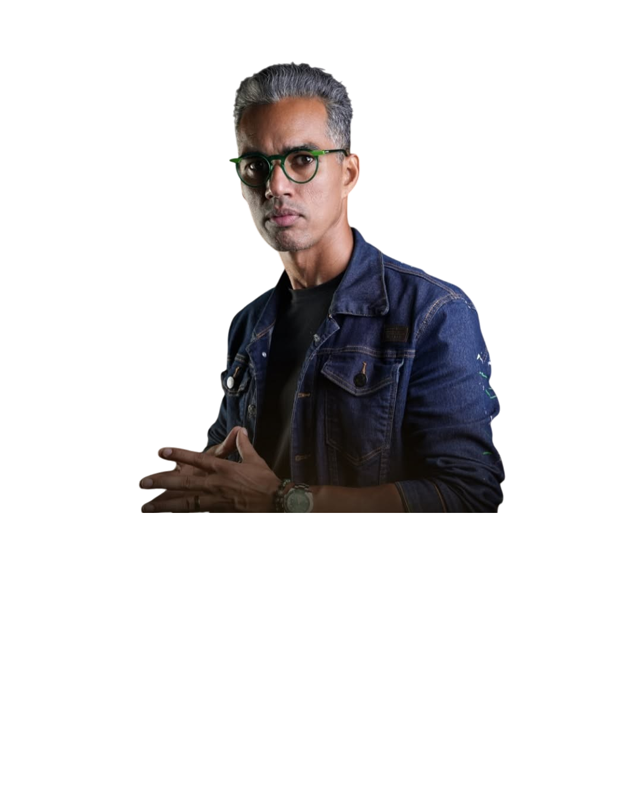
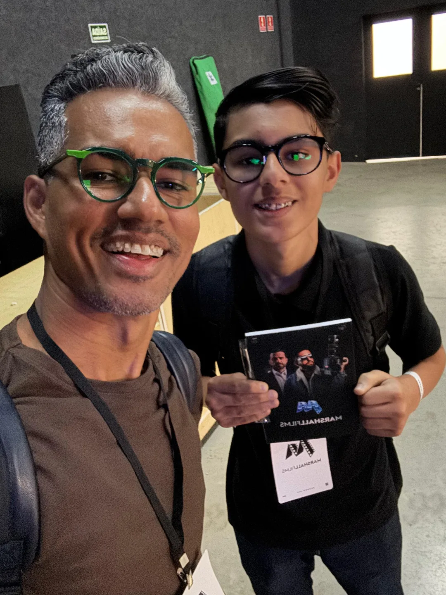
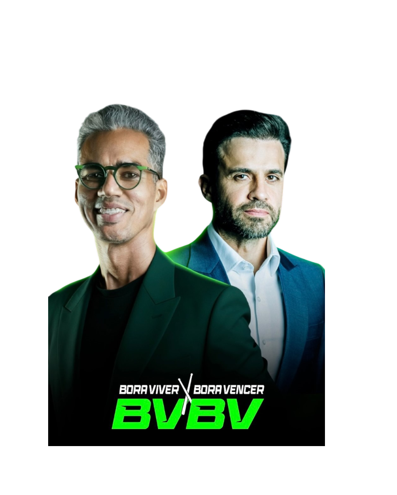

@jhonrickySocio de Pablo MarcalEditor de videos curtos
ZION
LUCAS
Videos curtos para criadores de conteudo e empresarios que querem publicar mais, economizar tempo e transformar conteudo bruto em cortes com ritmo.
Confianza em contexto real
Conteudo para nomes do mercado digital, empresarios e criadores.

Zion em campoTrabalho direto com cliente
Resultado que gera relacao
Um corte certo pode abrir conversas maiores.
No trabalho com Luigi Mangini, um corte ajudou a criar conexao com Joao Kleber, um dos grandes empresarios e investidores do Brasil. O papel da edicao aqui e simples: clareza, ritmo e contexto para a mensagem chegar melhor.
Portfolio 9:16
Cortes editados.
Selecao de videos curtos com foco em negocios, podcast, fitness, beleza, educacao e conteudo comercial.
Como eu ajudo
Mais conteudo com menos atrito.
Reaproveitamento de video longo
Transformo live, podcast ou aula em cortes curtos para manter constancia sem gravar tudo do zero.
Videos gravados no celular
Voce grava. Eu organizo, corto, ritmo, legenda e finalizo para publicar sem perder tempo editando.
Pacotes recorrentes
Mensal, trimestral ou semestral. Quanto maior o compromisso, melhor o desconto e a previsibilidade.
Processo
Do bruto ao corte publicado.
- BriefingVideo bruto, objetivo, referencia, prazo e formato.
- CuradoriaSeparacao dos melhores trechos para economizar tempo de producao.
- EdicaoCortes dinamicos, legenda, ritmo, acabamento e primeira versao.
- AjustesAte 3 ajustes inclusos. Extras sao cobrados a parte.
Atendimento Brasil e mundo
Quer produzir mais conteudo sem travar na edicao?
Me chama com seu tipo de conteudo, quantidade desejada e uma referencia. Eu te passo o melhor formato de pacote.